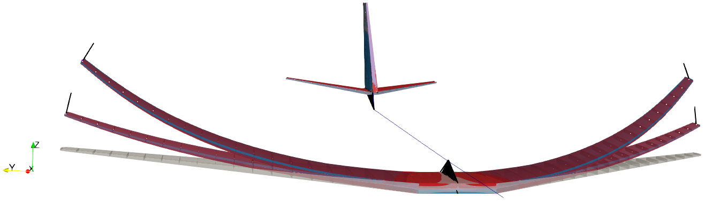
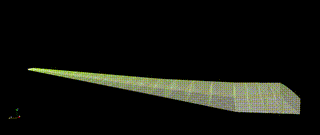
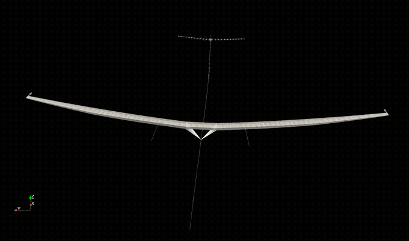
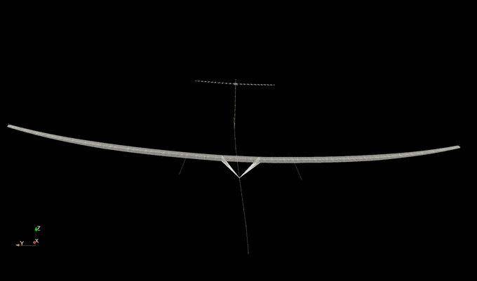
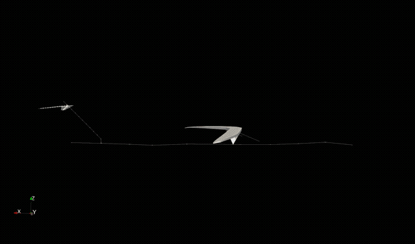
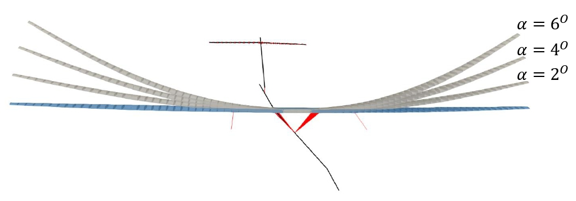
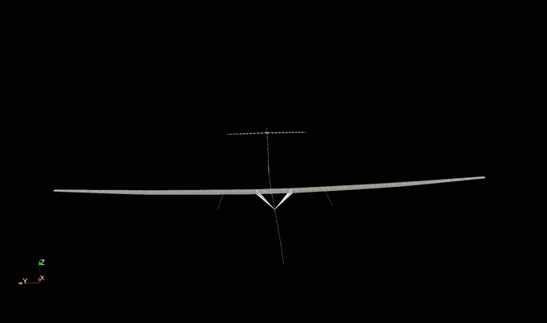

Finite Element models 4 Nonlinear Intrinsic Aeroelastics in JAX [FENIAX]¤
FENIAX is an aeroelastic toolbox written in Python using JAX. It acts as a post-processor of commercial software such as MSC Nastran.
Some of the key features of the software are: - Arbitrary FE models built for linear aeroelastic analysis are enhanced with geometric nonlinear effects, flight dynamics and linearized state-space solutions about nonlinear equilibrium. - Leveraging on the numerical library JAX and optimised algorithms, a high performance is achieved that leads to simulation times comparable to the linear counterparts on conventional platforms. - The software runs on modern hardware architectures such as GPUs in a addition to standard CPUs. - Algorithm differentiation (AD) of the aeroelastic response is available via JAX primitives. - Concurrent simulations for multiple load cases have been developed.
Warning
The software is in beta, and while it has been thoroughly tested, new features keep being added and it is likely features for your analysis might be missing. Get in touch if you encounter problems.
Getting started¤
If you just want to start running the code, navigate to the Getting started
Examples¤
The most relevant examples in the code base are shown here, these and more can be found in the folder /examples
They are also part of a large test suite that is integrated into the development using CI/CD.
Tip
Navigate to the code of the various examples, including the simulation input settings and postprocessing of the simulation --exactly as it was used for the articles backing the software. See examples
Nonlinear structural static results¤
Success
- Validated with MSC Nastran nonlinear solution (sol 400)
- AD differentiation of the response verified against finite-differences

Note
Take a liner FE model of arbitrary complexity from your favourite FE solver, and turn it into a fully geometrically nonlinear model. You just need a condensation step into the main load paths and the resulting linear stiffness and mass matrices.
Wing free dynamics¤
Success
- Validated with MSC Nastran nonlinear solution (sol 400)
- Runs over x100 faster than Nastran
- AD differentiation of the response verified against finite-differences

Free flying structure¤
This example first appeared in the work of Juan Carlos Simo (see Bio) , a pioneer in the field of computational structural mechanics and the
2D dynamics¤

3D dynamics¤
Concurrent aeroelastic simulations on ultra-high aspect ratio aircraft¤
Success
- Nonlinear aeroelastic response in our solvers takes similar times or less to the linear Nastran solution!!
- Concurrent simulations for various loading settings achieve unparalleled computational times.
- CPU VS GPU benchmarks available.
Wing-tip static loading¤
- Extremely large deformations
- Validation of concurrent solution
- 300 modes in the solution, 8 different loading scenarios running in parallel each with 11 substeps, 24 seconds in total on A100 GPU
  
Aeroelastic equilibrium for varying AoA¤
- Nonlinear effects: follower aerodynamic forces, geometric stiffening, wing shortening.
- Steady manoeuvre varying flow conditions and AoA for a total 256 cases in 14 seconds.

Dynamic loads at large scale: gust envelopes¤
- 512 different gust cases run on A100 GPU NVIDIA in 38 seconds!
- Rigid body modes included, rigid/elastic nonlinear couplings accounted for.
- Load envelopes available from the simulation.

License¤
Please see the project license for further details.